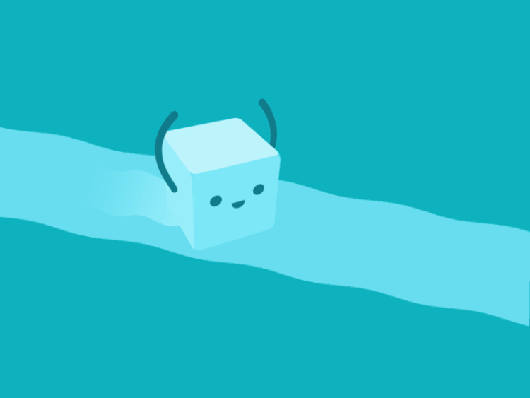

Schedule > 13. Loops
 In this lesson, we’re going to go over while loops and for loops – ways of allowing your program to repeat code for a specified number of iterations. Being able to repeat code blocks (also know as “looping” or “iterating”) is very powerful, and will allow you to easily perform repetitive tasks in a variety of different contexts: playing songs, drawing pictures, building animations, doing data processing, and so forth. Please do the assigned readings – they will help you get a solid foundation of JavaScript loops.
Readings
- Using While Loops and Do…While Loops in JavaScript. Digital Ocean
- For Loops, For…Of Loops and For…In Loops in JavaScript. Digital Ocean
Slides
Videos
Videos are in the course-website/videos folder
Lecture Files
- Lecture 20: Sample Files: Loops (Monday, 04/03)